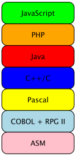

1 Programming Languages
Goals |
— |
— |
1.1 One Project, Many Programming Languages
In this day and age, a software project employs many different programming languages. A “full stack” web application has software running in the web browser and the web server, and this software is rarely written in the same language. Furthermore the server is hardly ever a monolithic piece of software in one language. It typically glues together code that interprets requests (from the network), turns them into database queries, checks some business logic, and many more actions. Each of them might have been written in a different language (and possibly in a different era).

history—
someone started a project in a language, and the language falls out of favor. platform—
a new platform appears and demands attention. The new platform (terminal, pc, browser, mobile) does not support the language in which the software is currently written. expressiveness, productivity—
on rare occasions, a team of developers can convince the project manager that a new programming language will make them more productive than the one that has been used so far.
While one could call this form of programming, “language-oriented
programming” this is a wider notion than the one we cover here. Indeed, in
a way we would like to help programmers avoid such “language stacks” by
internalizing it into Racket, as much as possible at least—
1.2 One Programming Language, Many Languages
Almost every programming language comes with several distinct sub-languages that deal with distinct programming domains. Let’s look at a couple of examples in Racket, illustrating how far back this idea dates.
1.2.1 Embedded Programs as Strings
"~a :: ~a\n"
; formatting strings to prepare for printing (printf "~a :: ~a\n" "hello" 'String)
(format "~a :: ~a\n" "hello" 'String)
; String -> False of [List String Char-String Char-String] (define (extract-digits year) (regexp-match "20(.)(.)" year))
(extract-digits "2018") (extract-digits "1999")
; String -> False of [List String Digit-String Digit-String] (define (extract-digits-version-2 year) (regexp-match #px"20(\\d)(\\d)" year))
Stop! Pick a natural number n. Enumerate n disadvantages of embedded programs as strings, not just for the formatting and regular-expression languages, but any such embedded domain-specific language you know.
1.2.2 Embedded Programs as Grammatical Productions
Extending a language’s grammar is an alternative to strings for adding small sub-languages. For example, many modern languages come with sub-languages for matching tree-shaped patterns of data and others for dealing with external events. Others support “frameworks” that are nearly indistinguishable from separate languages, though those do not enforce certain basic grammatical constraints and instead use run-time checking. This section illustrates this point with Racket examples, mostly to point out immediately that non-experts can program such grammatical extensions.
Pattern matching is one prominent example of a grammatical sub-language. While pattern matching in a language with type inference is a necessity, developers have come to love the idea of de-structuring deeply nested trees of (algebraic) data with just a bit of notations and pattern matching has thus made it into all kinds of programming languages.
The rest of these notes expect readers to be comfortable with programs such as this one.
#lang racket (module+ test (require rackunit)) ; LAMBDA is one of: ; – symbol, but not 'function ; – a list of two LAMBDAs, or ; – a list of this shape: (list 'function (list symbol) LAMBDA) (define simple-tree '((function (x) (x x)) (f y))) ; how many times 'function occurs as part of LAMBDA data (define (how-many-functions tree) (match tree [(? (and/c symbol? (compose not (curry eq? 'function)))) 0] [`(,function-expression ,argument-expression) (+ (how-many-functions function-expression) (how-many-functions argument-expression))] [`(function (,(? symbol? function-parameter)) ,function-body) (+ (how-many-functions function-body) 1)] [_ (error 'how-many-functions "LAMBDA expected, given: ~e" tree)])) (module+ test (check-equal? (how-many-functions simple-tree) 1))
Patterns are a new syntactic category, not comparable to anything that exists in Racket. Clearly one immediate advantage of this arrangement is that the compiler can check the validity of the “pattern program;” there is no need to wait until run time to discover problems. Equally important, if a programmer accidentally places a pattern outside, the compiler can issue an explanatory error message.
Additionally, Racket patterns allow escapes to Racket as the first one shows. The Racket code can be arbitrarily complicated, using elements of any library. And naturally, this Racket code could use match again.
We call such embeddings of sub-languages fine-grained, because elements of one grammatical category (patterns) can embedded Racket expressions and vice versa.
; dealing with events from the environment (require 2htdp/universe) (require 2htdp/image) (define (main s0) (big-bang s0 [on-tick sub1] [stop-when zero?] [to-draw (lambda (s) (circle (+ 100 (* s 10)) 'solid 'red))]))
Writing down a keyword such as on-key or even a complete on-key clause outside a big-bang context is a syntactic error:
Moving this clause inside the above big-bang allows us to stop the shrinking-circle animation in mid-sequence.
Stop! What kind of embedded domain-specific languages for programmers does your favorite programming language support?
Hint. Consider how how the JavaScript world has developed many such domain-specific embedded framework-languages to deal with queries of the DOM as a database rather a recursive tree or event-handling via virtual DOMs.
1.3 Why Embedded Languages Matter
Programming languages come with many different sub-languages because language designers accept the communication role of code. Every piece of code that moves from the initial prototyping stage to the maintenance phase needs a lot of attention; developers must repeatedly re-visit the code, read it, comprehend it, modify it, get it through unit and integration testing. Language designers embrace the idea that the language in which developers express ideas matters; and they go further in that they recognize the need for specialized sub-languages for the different aspects of programs.
Composition is a mere syntactic act.
Computation is accomplished via translation into the host.
Communication is easy because embedded programs compute host values. Of course, this form of communicating poses its own problems.
In general though, only the designers of a programming language can extend the language with new sub-languages. They do not enable ordinary developers to program such languages on their own. On one hand, they may not trust developers to create languages with the necessary coherence. On the other hand, equipping a language with the tools for programming new well-designed (implementations of) sub-languages has been a research problem for several decades, and we seem to have figured it out only recently.
1.4 One Racket Programmer, Many Languages
Racket empowers developers to add (sub)languages, and the process of adding these languages to the existing eco-system is free of any friction.
Racket comes with an expressive interface for the front-end of its implementation, that is, the syntax system. It enables developers to write compile-time functions and to hook such functions into the compiler. As a result, Racket is easy to extend with forms that abstract over recurring patterns in code that cannot be abstracted over with functions (or other conventional means of linguistic abstraction). Over the past two decades, we have figured out how to use these tools to program a wide spectrum of new sub-languages within Racket.
|
|
|
One direction of advancement concerns the creation of language modules. Like all modern languages, Racket supports modules and a modular style of programming. Unlike in other languages, a Racket programmer chooses the programming language for each module in a software base independently of what languages the other components are written in. Conversely, a language is just a module. So to construct languages we write modules and to write modules we use languages. This notion of langauge-modules is key to writing software systems in Racket.
Here are two modules that use languages other than plain racket:
| #lang datalog |
| #lang typed/racket | |||||||||||||||||||||
|
|
|
Another direction of advancement is about the creation of fine-grained language embeddings. The preceding section presents the idea of a language of match patterns. Two other sub-languages are about exporting from, and importing into, Racket. In Racket provide and require specifications employ their own rich sub-languages.
Programming both kinds of languages in Racket—
One particular inheritance that module languages and embedded languages can benefit from is extensibility. That is, we may want sub-languages to be as extensible as Racket itself, and we can occasionally achieve this partly by inheriting Racket’s form of extensibility in some ways.
> (adder 1 2 3) '(2 3 4)
Similarly, the provide and require sub-languages are extensible, too. See provide Macros and require Macros for the documentation on how to extend these languages.
1.5 Programming A Language, Programming Many Languages
The goal of these notes is to introduce you to the idea of programming a language extension, programming a complete language, and eventually programming as many languages as needed for any project.
In short, you can think of these notes as introduction to the art of hacking your own languages (in Racket).